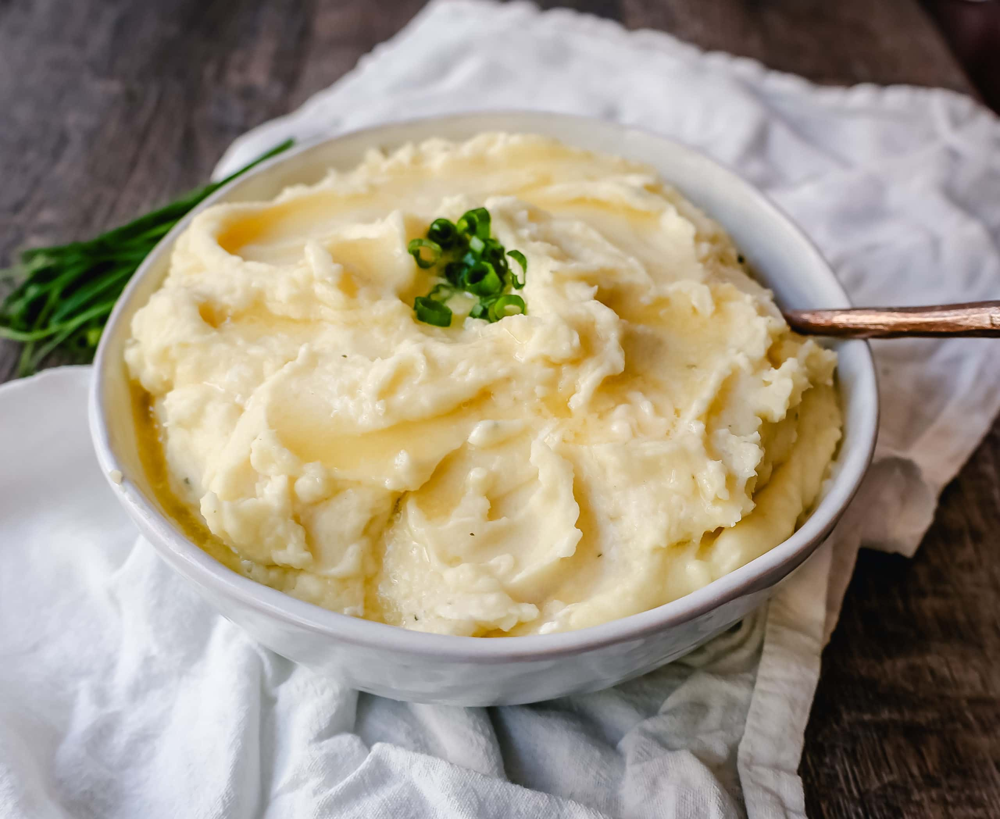

Mashed Potatoes

Description
Mashed potatoes is the perfect side dish, or sometimes a standalone snack. The
only exception I have had with all mashed potatoes is that I absolutely require any
form of gravy along with it. This simple mashed potatoes recipe tastes fulfulling
and delicious to pair with any kind of gravy!
This recipe will make 1-2 small servings as the perfect snack or side for a meal!
Ingredients
- 1 large russet potato
- 2-3 tbsps of butter
- 1/4 cup heavy cream
- black pepper
- salt
- green onion for garnish (optional)
Steps
- Bring one pot of water to a boil, adding a small pinch of salt.
Peel and wash your potatoes, chopping into smaller chunks and add to the pot
- Boil potatoes until fork tender. Drain water and leave the potatoes in the pot
- Use a potato masher to start mashing and determine if it is tender enough.
After mashing a bit, add your butter and heavy cream, and continue mashing.
- After mashing to your preferred consistency, add salt and pepper to your
liking and garnish with green pepper. Enjoy!